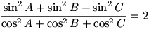

De investigación
Problema 329
Propuesto
por Juan Bosco Romero Márquez profesor colaborador de
la Universidad de Valladolid
Demostrar que un triángulo cuyos ángulos B y
C satisfacen la igualdad

Es rectángulo.
[Ampliación del proponente: ver qué tipo de
triángulo es si se tienen las posibles desigualdades]
IMO Shortlist 1967.
Poland. 5
Solución de Maite Peña Alcaraz, estudiante de Industriales en la Universidad de Comillas (Madrid) (11 de agosto de 2006)
Multiplicando a ambos lados de la ecuación por el denominador del primer miembro y agrupando senos y cosenos es fácil obtener:
Y utilizando el teorema del seno vemos que:
Podemos suponer sin pérdida de la generalidad que y utilizando ahora el teorema del coseno obtenemos:
Puesto que , tenemos que el signo de esta expresión depende de la relación .
En caso de que .
En caso de que . Por último, si y además tenemos que por ser los ángulos de un triángulo , y por ello